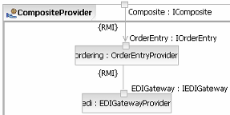
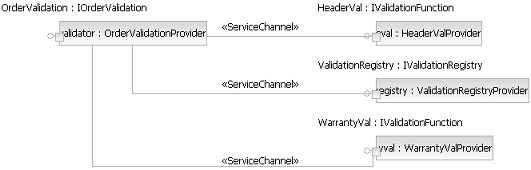
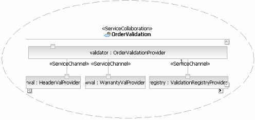
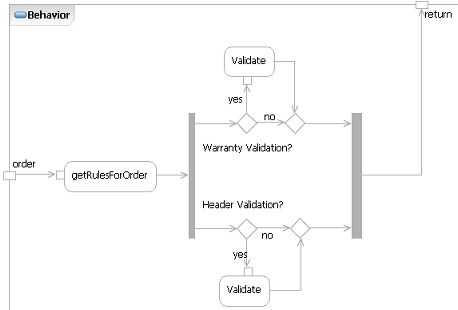
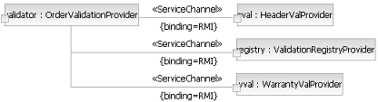

| Концепция: Service Composition and Choreography |
 |
|
| Связанные элементы |
|---|
IntroductionOne key aspect of Service-Oriented Architecture (SOA) is that services be composable, which means that a new service is often composed as a collaboration between a set of existing services. In many respects this is true of existing component-based and object-oriented techniques, except that certain capabilities in the middleware being used to develop service-oriented solutions allows the direct execution of these collaborations through standards such as Business Process Execution Language for Web Services (BPEL4WS, WS-BPEL or just BPEL). It is this ability to compose services structurally, that is to define the usage dependencies between services, and also to compose services behaviorally that makes a services-based architecture and IT strategy attractive to so many organizations. More and more organizations are realizing the need for increased agility in their ability to respond to changing business environments, whether it's the pressure of globalization, new markets and channels, or simply new competitors using technology more efficiently. These organizations are looking towards service-oriented development and service-oriented solutions as a way to organize their IT assets to address current requirements and provide an infrastructure of business-aligned functions that can be reused, reconfigured, and recombined efficiently and effectively to address future requirements. Another aspect of the ability to compose services in this manner is that it provides a flexible way to incorporate existing IT assets into new solutions in the same manner as newer assets. For example, existing assets, even those developed for mainframe platforms and similar, can be exposed as services with some middleware products and integrated in the same way as new services developed using J2EE, IBM WebSphere or Microsoft .NET. Unfortunately, most existing assets tend not to be developed with interfaces that adhere to much of the guidance we would use for new services. As such, it is useful to create composite services that do not just wrap these existing services, but rather provide different, more business-aligned interfaces that leverage the existing functions by aggregating and choreographing them to provide the higher-level capability. Service ChoreographyLet us look briefly at the term Choreography. This is the term used in many middleware products to denote the managed execution of some script denoting a process flow where the participants are services and the tasks are message exchanges. In some products, the term Orchestration is used. While some industry analysts and technologists describe differences in the meaning of the words and how these terms are used in standards, for most users the differences are much less interesting than the similarities. In terms of standards, a common way to represent the choreography of Web Services was late in coming, after most of the leading middleware vendors introduced proprietary solutions. The current industry standard is the Business Process Execution Language for Web Services (BPEL4WS or BPEL). For more information on BPEL4WS, see the OASIS WSBPEL site or the IBM BPEL site. Services as Composite StructuresServices can easily be developed upon the functions provided by other services in a recursive manner, as shown in the diagram below, where services can identify those services they rely upon. In this case, a composite service is using the order entry and Electronic Data Interchange (EDI) gateway services. Composite services are often used where the usual factoring of service capabilities identifies common functions that may be provided in more than one circumstance. For some services, where the role is more to provide infrastructure capabilities (such as the EDI service below), this is relatively easy to identify. In other cases, detailed service collaborations will identify the need to split a candidate service into more than one actual service.  One important use of composite services is in the provision of functions realized by existing (legacy) assets. In most cases, such capabilities will be accessed via connectors or APIs provided by the asset itself and a new service will be developed which relies on these assets for some logic. On the other hand, to allow the aggregate component to evolve more flexibly and to allow the existing asset to be swapped out in the future for a different implementation, an alternative strategy can be used. In this case, each existing function is exposed as an independent service, these services are then used by the composite service allowing for both the existing asset, and the composite services to evolve independently. Another use of composite services is where the set of actual services leveraged by a composite service are not known in advance. For example, in the case of an order management service we might identify the need to separate out the order validation as a separate set of independent business rule services such that new rules can be added at a future date. This is related to the topic of service mediation (see Guideline: Service Mediation). Obviously such a approach has benefits but it also has drawbacks. If the low-level service may only be exposed via Internet protocols such as SOAP/HTTP, it is likely to be less reliable and have poorer performance than if accessed via a native API or connector. These tradeoffs have to be a part of the general set of architectural decisions made and documented as part of any service design. For more information on both existing asset access and the relationship between candidate and actual services see the Activity: Existing Asset Analysis. Service CollaborationsIn modeling the behavior of composite services we use the notion of a Artifact: Service Contract during the identification and design phases.
In this way, we can see that a Service Collaboration in the service-design task is directly related to the notion of choreography in web services terms. It represents a configurable, externalized flow description sequencing a set of message exchanges between services. In most middleware implementing choreography, the flow is described in an XML language such as BPEL. Such a language could be generated from the service collaboration described in the Artifact: Service Model when the flow itself is described with UML 2.0 Activities or Interactions. The Collaboration is comprised of a composite structure providing the view of the collaborators and their connections as well as a behavior denoting the messages exchanged and their sequencing. The diagram above showing a CompositeProvider demonstrated a composite structure, as does the Order Validation picture below.  This is not the structure of the validation provider itself, but the structure of the service collaboration, as shown in the diagram below.  Specifying Service BehaviorAs stated above, it is most common to use either UML 2.0 Activities or Interactions, specifically Sequence Diagrams, to describe the flow of messages between services in a collaboration. The diagram below is a UML 2.0 Activity Diagram demonstrating the behavior of the order validation service. For a given order, the validation registry service provides a list of actual validation operations to call.  Note that such behavior can be identified for a complete service or on a per-operation basis depending on the needs of the service. In this case, the Activity within the Collaboration is related to the Validate() operation (via the specification/method association in UML 2.0). Specifying Service BindingsAs we saw above, the bindings (actual physical protocols and message encodings) used to communicate between services are identified as a property of the Artifact: Service Channel in the composition view. Actual bindings used between services have significant impact on non-functional requirements such as performance, reliability, and security. So, the available choices should be documented with the consequences of each identified within the overall system architecture. For example, it may be that one use of Artifact: Service Partition is to represent allowable or required binding between services within the partition - a common requirement being that services within some logical zone communicate using high-performance, yet proprietary binding whereas communication with services outside of the zone use lower performance but standardized bindings. People often wonder if capabilities required for Web service performance, reliability, and scalability can be provided by an architecture based on HTTP and SOAP, which are inherently slow and unreliable. First, "slow and unreliable" must be defined, then it must be realized that even reliable transports rely on unreliable means. For example, when using SOAP over HTTP, it is always possible to build application-level protocols and interactions that provide additional capabilities for message acknowledgements and security. However, if one considers that certain services communicate within the same security or application context, we might consider using different means than HTTP. It is very important to realize that even though Web services present a simple model and a set of simple, flexible protocols, you are not restricted to these choices. Just as WSDL already has bindings for both SOAP and HTTP GET/PUT, it is important to provide requestors with additional choices. For example, a single service may expose a message using a message-queue binding and a SOAP binding so the requestor can choose the more appropriate binding to use. In this case, the provider may also provide incentives such as a guaranteed service level if the message queue is used but no service guarantees for an HTTP conversation. Taking the order validation example above, we can see how the bindings are associated with the stereotype Artifact: Service Channel and visualized on the diagram below.  When architecting and designing enterprise-scale solutions, we must always remember the functional and nonfunctional requirements and ensure that the correct trade-offs and decisions are made to support the business goals. |
© Copyright IBM Corp. 1987, 2006. Все права защищены.. |